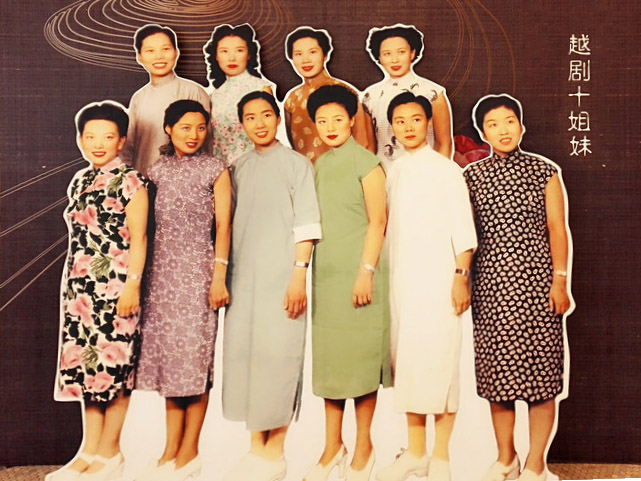

首先是我把  文字类详情页抽出来了
如果你要做一类二级页面

只要在css 里 import（detail.css)
左边的格式 参加流派里的
比如html 结构里 只要有 leftcon > maincon {
 里面的 h1.title h2 info 格式都是一样的
}
右边 li也抽出来了
这个也在detail.css 里面
右边想要用列表
.C BK320(边框类) haveColor （加上haveColor类，边框就会有底色 haveWhiteBG 有白的底色【这个写在base里 边框类下面】）
下面是TT MM BB ， MM 里面<ul class="listAtRight"> 就有之前
看一下代码就懂了 没什么用  比较有用的还是 左边的格式 统一了

其次是百科 页面里 我们不是有一个图 一段文字嘛 那段文字 后面可以更一个更多
然后 点到一篇文章里 大概的介绍一下 这个XX的内容  然后多放点图

lib 里图的位置 还是得修一修
lib 左下角 添加贴士 推荐学习越剧百科 了解三种百科 查看经典剧目 跳转到视频欣赏 或欣赏视频时回顾百科内容 查看越剧知识

经典剧目 跳转到视频欣赏


视频欣赏 这个任务比较重
右侧
（1）答题部分： 唱腔（最好查一查 或者引用明确的视频）、服饰、视频内容相关的一道题
（2）①有相关唱腔的跳转链接（做的网页上不要出现相关二字 你就推荐就好了（最好时推荐对的，错了就算了））
     ②同理 服饰也加上
     ③（下一个视频的连接）
底部
评论区

在文章中用又id = ans_$ 来标记题目答案 右侧点击查看答案的时候 跳转到该位置 并高亮答案

文档要开始编写了
视频等我回去录 但是 大致的访问流程 和文字可以先写起来


730 -60 670
670-60 610

120 180 190 120                            <p>腔，歌唱的音调、旋律，也称腔调、唱腔有时候，也指字后的拖腔。越剧唱腔永不枯竭的源泉来自于丰富多彩的民间音乐和民歌资源。民间音乐和民歌资源是越剧唱腔发展的夯实根基。越剧唱腔的多次变革是在艺术实践过程中创造形成的，在每个时代，都有其独特的唱腔特点。常用的主要腔调是【四工调】，【尺调】，【弦下调】；<a
                                    href="javascript:void(0)">更多</a></p>
                        </div>
                        <hr>
                        <div class="con-con">
                            <ul class="con-list">
                                <li><a href="cq/sigonghe.html">四工合调</a></li>
                                <li><a href="cq/aiai.html">哀哀调</a></li>
                                <li><a href="cq/lingsha.html">呤嗄调</a></li>
                                <li><a href="cq/sigong.html">四工调</a></li>
                                <li><a href="cq/chi.html">尺调</a></li>
                                <li><a href="cq/xianxia.html">弦下调</a></li>
                            </ul>
                        </div>
                    </div>
                    <div class="BB"></div>
                </div>
                <h2>流派百科</h2>
                <div class="BK730">
                    <div class="TT"></div>
                    <div class="MM">
                        <div class="con-top">
                            
                            <p>越剧发展中，有一个引人注目的现象，就是自全面艺术改革以来，不断繁衍出众多的艺术流派，它们犹如一朵朵绚丽夺目的奇葩，争奇斗艳，各具独特的色和香，装点着越苑的满园春色，使人们为之倾倒，为之陶醉。<a
                                    href="javascript:void(0)">更多</a></p>
                        </div>
                        <hr>
                        <div class="con-con">
                            <ul class="con-list">
                                <li><a href="lp/fan.html">范派</a></li>
                                <li><a href="lp/qi.html">戚派</a></li>
                                <li><a href="lp/bi.html">毕派</a></li>
                                <li><a href="lp/jin.html">金派</a></li>
                                <li><a href="lp/yuan.html">袁派</a></li>
                                <li><a href="lp/bo.html">傅派</a></li>
                                <li><a href="lp/wang.html">王派</a></li>
                                <li><a href="lp/zhang.html">张派</a></li>
                                <li><a href="lp/yi.html">尹派</a></li>
                                <li><a href="lp/xu.html">徐派</a></li>
                                <li><a href="lp/lu.html">陆派</a></li>
                                <li><a href="lp/lv.html">吕派</a></li>
                            </ul>
                        </div>

                    </div>
                    <div class="BB"></div>
                </div>
                <h2>服饰百科</h2>
                <div class="BK730">
                    <div class="TT"></div>
                    <div class="MM">
                        <div class="con-top">
                            
                            <p>新越剧时期，越剧服装也进行了的改革，逐步形成了自己的风格，拥有一批设计、制作队伍。这时期的越剧服装，强调历史时代感，与传统的戏曲服装相去甚远。在衣料上，大量地用市场上的成品花布、缎、纱、绸、纺做戏服。在纹样上，以简炼、集中、素净的风格为主，主要集中领圈、袖口、门襟上面，纹样以回纹、云纹居多。服装绣花的方法，改革为花纹绣在小纺上（一种较薄的绸料）剪下来，缝制在服装上，可以多次使用，服装又有新鲜感。<a
                                    href="javascript:void(0)">更多</a>
                            </p>
                        </div>
                        <hr>
                        <div class="con-con">
                            <ul class="con-list">
                                <li><a href="fz/mang.html">蟒</a></li>
                                <li><a href="fz/guanyi.html">官衣</a></li>
                                <li><a href="fz/kao.html">靠</a></li>
                                <li><a href="fz/guzhaungyi.html">古装衣</a></li>
                                <li><a href="fz/pei.html">帔</a></li>
                                <li><a href="fz/zhezi.html">褶子</a></li>
                                <li><a href="fz/jianyi.html">箭衣</a></li>
                                <li><a href="fz/qun.html">裙</a></li>
                                <li><a href="fz/beita.html">背褡</a></li>
                                <li><a href="fz/yunjian.html">云肩</a></li>
                            </ul>
                        </div>
                    </div>
                    <div class="BB"></div>
                </div>

            </div>


            <!-- 右边 -->
            <div class="rightcon hdts">
                <div class="T">
                    <h2>越剧百科</h2>
                </div>
                <div class="BK320">
                    <div class="TT"></div>
                    <div class="MM">
                        <ul>
                            <li><a href="">一句唱词 鉴赏徐派与尹派的魅力</a></li>
                            <li><a href="">顾迷会精彩回眸，感动不是一点点</a></li>
                            <li><a href="">“花瓶”以外的精彩</a></li>
                            <li><a href="">风雪渔樵记，一个男人的成长成熟史</a></li>
                            <li><a href="">嵊州城隍庙——越剧艺术的摇篮</a></li>
                            <li><a href="">嵊州越剧教育启示录</a></li>
                            <li><a href="">施家岙村：滋养越剧的江南小村</a></li>
                            <li><a href="">市越剧艺校毕业生成为香饽饽</a></li>
                            <li><a href="">研究越剧要与研究女性文化结合起来</a></li>
                            <li><a href="">十大明星从百姓中走来</a></li>
                            <li><a href="">黄龙洞有个小小社区</a></li>
                            <li><a href="">袁雪芬：越剧“十姐妹”的来历</a></li>
                            <li><a href="">越剧演员爱护嗓子方法</a></li>
                            <li><a href="">现在的小生为什么总比花旦矮</a></li>
                            <li><a href="">越剧音韵简介</a></li>
                            <li><a href="">《梁祝》：一个可以代表国家的剧目</a></li>
                            <li><a href="">流派唱腔：百花争鸣欣欣向荣</a></li>
                            <li><a href="">越剧唱腔主要有几个派别？</a></li>
                        </ul>
                    </div>
                    <div class="BB"></div>
                </div>
            </div>
        </div>


    </div>
    <div class="bigCon foot">
        <div class="copyright">
            <a href="">网站首页</a>
             |
            <a href="">越剧动态</a>
            |
            <a href="">越剧讲堂</a>
            |
            <a href="">越剧教育</a>
            |
            <a href="">经典剧目</a>
            |
            <a href="">视频赏析</a>
        </div>
        <div class="copyright">版权归所有</div>
    </div>
    <script src="/scripts/slide.js"></script>
</body>

</html>
